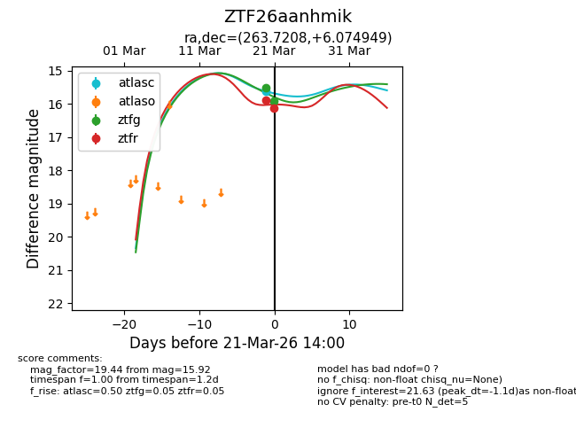
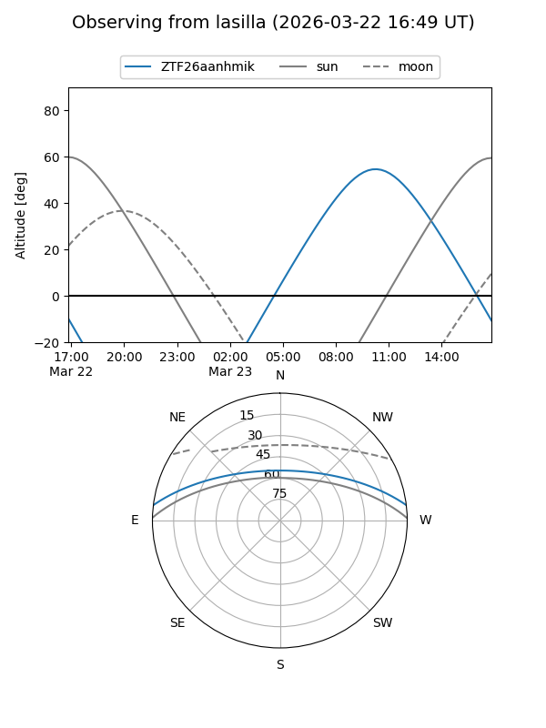
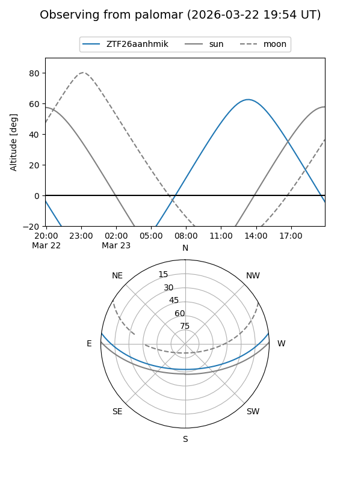
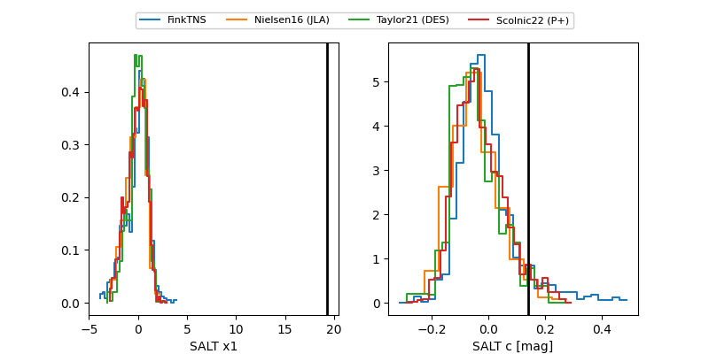

ZTF26aanhmik
Target ZTF26aanhmik at 2026-03-21 14:02
Aliases and brokers:
FINK: link
Lasair: link
ALeRCE: link
alt names
ZTF26aanhmik (ztf,fink_ztf)
Coordinates:
equatorial (ra, dec) = 263.7208,+6.07495
equatorial (HMS+DMS) = 17:34:53.00,+06:04:29.82
galactic (l, b) = (29.6135,+19.77972)
Flags:
Photometry:
last atlasc=15.62, ztfg=15.92, ztfr=16.12
1 atlasc, 2 ztfg, 2 ztfr detections
Lightcurve

Visibility


Additional plots
